Como usar este guia
Na DuGood, o organizador cria eventos sociais (corridas, caminhadas, shows, jantares…) em que a inscrição vira doação para uma ou mais instituições. O painel cuida da venda dos ingressos, da lista de inscritos, da portaria e do financeiro. Este guia explica, um assunto por página, tudo o que é preciso para começar.
Na primeira vez, leia na ordem. Depois, use como consulta. O mesmo conteúdo está no vídeo tutorial que acompanha este guia.
Neste guia
- Antes de começar
- Entrar no painel
- Aceitar os Termos de Parceria
- Convidar a equipe
- O que cada pessoa vê ou edita
- Equipe da portaria (staff)
- Avisos por e-mail e idioma
- O menu e a Visão geral
- Perfil do organizador
- Conta Stripe
- Criar o evento
- Venda em seu nome
- A página do evento
- No dia do evento
- Financeiro
- Dúvidas frequentes
Tenha à mão
- O link de cadastro do painelEnviado pela equipe da DuGood. É por ele que a primeira pessoa entra.
- Os dados para a conta StripePessoa física (CPF, data de nascimento, endereço e conta no CPF) ou jurídica (CNPJ, dados dos sócios e conta no CNPJ). Só é necessária para vender em seu nome.
- As instituições que o evento vai apoiarCada uma aprova o evento antes de ele ir ao ar.
- Quem vai trabalhar na portariaCada pessoa usa a própria conta da DuGood.
A parte das instituições vai inteira para elas
Hoje a DuGood não cobra taxa de administração nas vendas, e as ferramentas do painel são grátis. Só a Stripe, que processa os pagamentos, cobra as tarifas dela, e em cada evento você escolhe se absorve a tarifa ou se o comprador paga.

O primeiro acesso, pelo link de cadastro
A entrada no painel do organizador é sempre pelo link de cadastro que a DuGood mandou. É ele que liga a sua conta ao seu painel.
Passo a passo
- Abra o link de cadastro.Funciona no computador e no celular. A tela de entrada da DuGood abre.
- Entre com Google, Apple ou e-mail e senha.Se você já usa a DuGood para doar, pode usar a mesma conta.
- Sem conta? Clique em Cadastrar.Informe e-mail, telefone, CPF e uma senha. Um código chega no seu e-mail: digite-o para confirmar.
- Aceite os Termos de Parceria.Na primeira entrada, eles aparecem no próprio painel (veja a próxima página).

Quem entra primeiro vira o administrador
A primeira pessoa que entra pelo link vira o administrador do painel: tem acesso a tudo e decide quem mais entra. Quem entra depois pelo mesmo link pede acesso, e o administrador recebe um aviso por e-mail para aprovar (página 04).
Combine quem entra primeiro. O ideal é que seja a pessoa que vai cuidar do painel no dia a dia. A administração pode ser passada para outra pessoa depois.
Um e-mail, um painel. Cada conta da DuGood fica ligada a um painel só. Se a pessoa já usa o e-mail no painel de uma ONG, de uma loja ou de outro organizador, precisa entrar com outro e-mail.

O acordo do organizador com a DuGood
Na primeira vez que entra no painel, cada pessoa vê os Termos de Parceria — Organizador de Eventos DuGood. O aceite é feito no próprio painel, em poucos segundos, e só aparece uma vez para cada pessoa.
O que os termos dizem
- Uso da imagem e da marca.Você autoriza a DuGood a usar o nome, o logo e a identidade visual do seu evento ou organização na plataforma, em materiais de divulgação, nas redes sociais e em campanhas de impacto social. A autorização é gratuita, não exclusiva e vale enquanto a parceria estiver ativa.
- Validação dos ingressos.Você se compromete a validar os QR codes na entrada do evento, manter o scanner funcionando, conferir os dados de quem entra, manter os times do evento atualizados e avisar a DuGood se encontrar algum problema.
Para aceitar
Leia o texto, marque as duas opções no fim e clique em Aceitar e continuar. O painel abre em seguida.
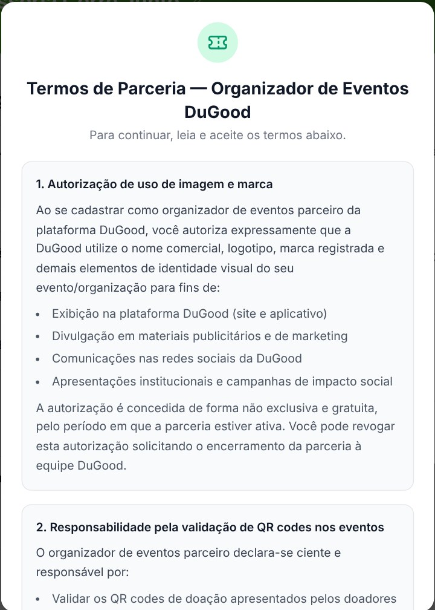
Quer encerrar a parceria? A autorização de uso da marca pode ser revogada pedindo o encerramento da parceria à equipe da DuGood.

Mais gente cuidando do painel
Cada pessoa da equipe entra com a própria conta, pelo mesmo link de cadastro do painel. Assim cada um tem o seu login, e você controla quem entra e o que cada um pode fazer, sem compartilhar senha.
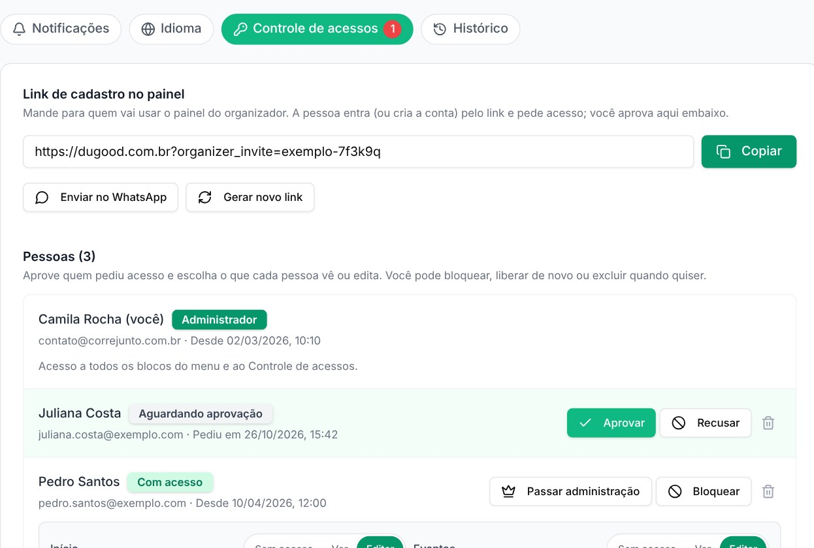
Passo a passo
- Copie o link de cadastro.Clique em Copiar e mande para a pessoa como preferir, ou use Enviar no WhatsApp.
- A pessoa entra pelo link.Ela entra com a conta dela (ou cria uma). O painel ainda não abre: fica o pedido de acesso.
- Você recebe o aviso e aprova.Chega um e-mail para o administrador, e o pedido aparece em Controle de acessos e nas Pendências da Visão geral. Clique em Aprovar ou Recusar.
- Pronto: a pessoa já pode usar o painel.Quem é aprovado começa podendo editar tudo. Para limitar, veja a próxima página.
Para a portaria, use o link de staff (página 06): quem só valida ingressos no dia do evento não precisa entrar no painel.
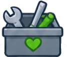
Acesso por bloco do menu
Nem todo mundo precisa ver tudo: quem cuida da divulgação não precisa ver o financeiro, por exemplo. Para cada pessoa, você escolhe o acesso a cada bloco do menu: Início, Eventos, Conta e Financeiro.
| Nível | O que acontece para a pessoa |
|---|---|
| Sem acesso | O bloco some do menu dela, como se não existisse. |
| Ver | Ela vê as telas do bloco, com um aviso de que o acesso é só para ver, e não consegue salvar nada. |
| Editar | Ela vê e muda tudo no bloco. É o padrão para quem acabou de ser aprovado. |
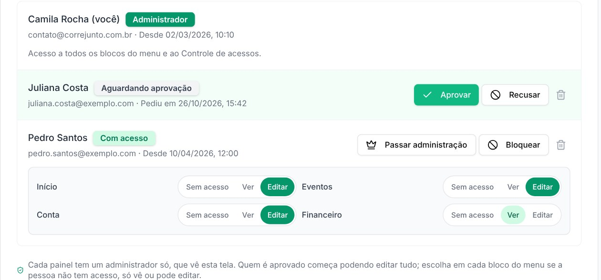
Um administrador por painel
- Cada painel tem um administrador só. Ele tem acesso a tudo, é o único que vê o Controle de acessos e o único que muda os avisos por e-mail.
- Passar administração: quando a pessoa responsável muda, o administrador passa o papel para outra pessoa da equipe.
- Bloquear, liberar e excluir: bloquear tira o acesso na hora, e dá para liberar de novo depois. Excluir tira a pessoa da lista: se ela entrar pelo link outra vez, vira um pedido novo.
- Gerar novo link: o link antigo para de funcionar, e quem já tem acesso continua com acesso.

Voluntários validando ingressos, sem ver o resto
Cada evento tem o seu link de staff, para quem trabalha na entrada. Com ele, a pessoa só vê a lista de inscritos do evento e confirma as presenças, pelo QR Code ou à mão. Ela não vê valores, não baixa a lista e não altera o evento.
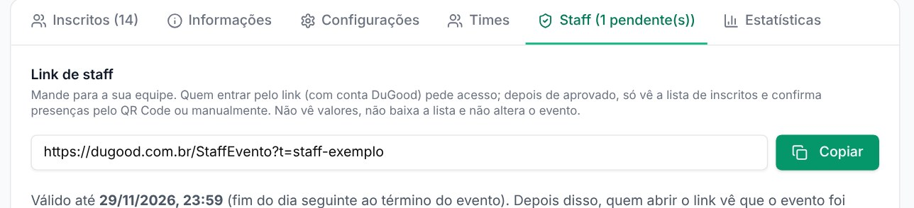
Passo a passo
- Crie o link de staff.Na aba Staff do evento, clique em Criar link de staff. Só dá para criar em eventos aprovados e não encerrados.
- Mande para a equipe.Copie o link ou use Enviar no WhatsApp. Quem entra pelo link (com a conta da DuGood) pede acesso.
- Aprove quem vai trabalhar.Os pedidos aparecem na mesma aba. Aprove para liberar a lista e o check-in. Você pode bloquear ou excluir quando quiser.
- No dia, cada um abre o link no celular.Lê o QR Code do ingresso ou procura o nome na lista e confirma a chegada.
O acesso termina sozinho. O link vale até o fim do dia seguinte ao término do evento (se a data mudar, a validade acompanha). Você também pode desativar o link ou gerar um novo a qualquer momento.

As suas preferências
Avisos de inscrição
Toda inscrição nos seus eventos pode virar um e-mail. Em eventos grandes, é melhor receber um resumo. Em Configurações › Notificações, escolha:
- A cada vez: um e-mail por inscrição.
- Uma vez por dia: um resumo com as inscrições do dia.
- Nunca: sem e-mail de inscrição. As inscrições continuam aparecendo no painel.
Os avisos vão para o e-mail de contato da conta. Todos veem a tela; só o administrador salva. Desligar todas as notificações da plataforma corta os avisos de inscrição e os resumos.
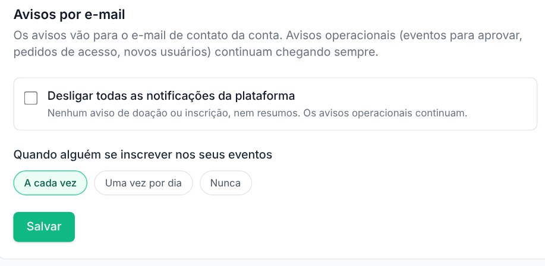
Avisos importantes chegam sempre. Pedidos de acesso ao painel e outros avisos de operação não dependem dessas escolhas.
Idioma
Em Configurações › Idioma, cada pessoa escolhe ver o painel em português, inglês ou espanhol. Vale só para quem escolheu, em todos os aparelhos em que entrar, e a página recarrega no idioma novo.

Quem se inscreve nos seus eventos recebe tudo no idioma dele: a página de pagamento, a confirmação e os ingressos saem em português, inglês ou espanhol. Os textos que você escreve aparecem como você escreveu.

Onde fica cada coisa
| Bloco | O que tem |
|---|---|
| Início | Visão geral: eventos no ar, inscritos, check-ins, ingressos a validar, pendências, inscrições por mês e próximos eventos. |
| Eventos | Meus eventos (criar e cuidar de cada evento), Escanear ingressos e Sorteios e leilões. |
| Conta | Perfil: como você aparece nas páginas dos seus eventos. |
| Financeiro | Pagamentos (conta Stripe e repasses), Extrato e Relatórios mensais. |
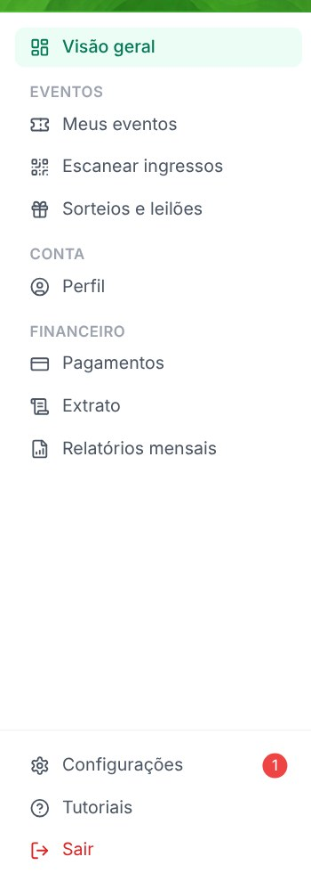
No rodapé do menu ficam Configurações (notificações, idioma e, para o administrador, Controle de acessos e Histórico), Tutoriais e Sair.
A Visão geral
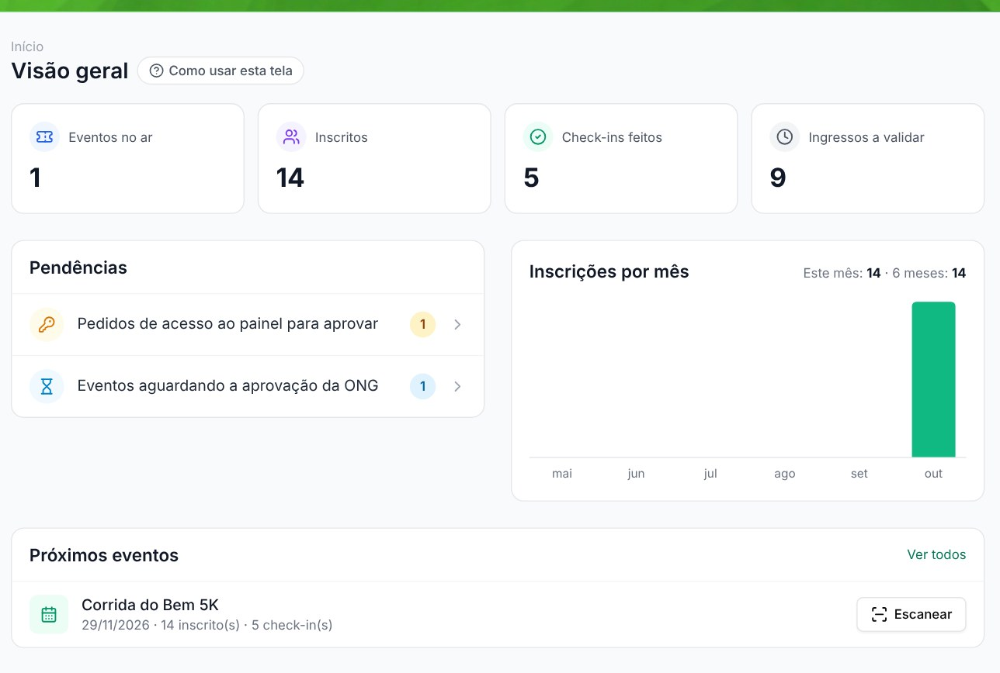
É a primeira tela do painel. Mostra os números dos seus eventos, as Pendências (pedidos de acesso, eventos aguardando a aprovação da ONG, eventos recusados) e os próximos eventos, com um botão para escanear. No começo, mostra também o que falta: completar o perfil, configurar os recebimentos na Stripe, criar o primeiro evento e ter um evento aprovado pela ONG.
Ficou com dúvida em alguma tela? Clique em Como usar esta tela, ao lado do título. Os tutoriais completos ficam em Tutoriais, no menu.

Quem está por trás dos eventos
O perfil aparece na seção "Sobre o organizador" da página de cada um dos seus eventos. É onde o participante conhece você antes de se inscrever.
O que preencher
- Logo da sua organização ou do seu evento.
- Sobre você: quem você é e que tipo de evento organiza. Conte a sua história e os eventos que já fez.
- Site ou rede social, para quem quiser conhecer mais.
Clique em Salvar: as páginas dos seus eventos já mostram o perfil novo.
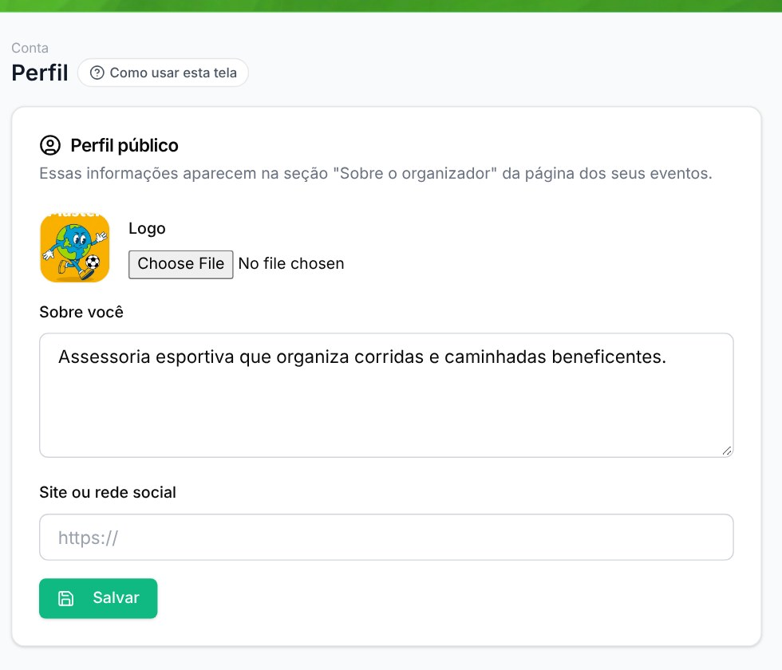
Para mudar o nome do organizador, clique no lápis ao lado do nome, no topo do painel. O nome novo vai para os seus eventos e para as contas da equipe.
Onde caem as suas vendas
Para vender em seu nome (página 12), as vendas são cobradas numa conta sua na Stripe, a empresa que processa os pagamentos. O comprovante sai no seu nome, e da conta Stripe o dinheiro vai para a sua conta bancária nos repasses. Nos eventos 100% para uma instituição, a conta não é necessária.
- Escolha pessoa física ou jurídica.Física: CPF, data de nascimento, endereço e conta bancária no CPF. Jurídica: CNPJ, dados dos sócios e conta bancária no CNPJ.
- Faça o cadastro no site da Stripe.Clique em Cadastrar minha conta na Stripe. A Stripe confere os dados e libera a conta; no fim, você volta para o painel.
- Pronto: "Conta pronta para receber".Escolha a frequência dos repasses para o banco (diário, semanal, mensal ou sob demanda).
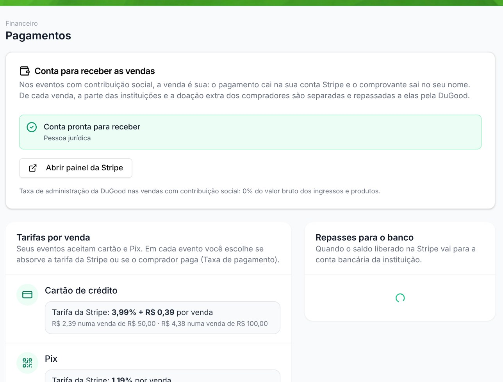
Bom saber
- Os seus eventos aceitam cartão e Pix. A tarifa da Stripe de cada meio aparece nesta tela.
- Abrir painel da Stripe leva ao painel da sua conta: recebimentos, documentos e a troca de conta bancária, com confirmação de identidade.
- Sem a conta pronta, o Extrato e os Relatórios mensais ficam apagados, com o convite para configurar.
A Stripe pode pedir mais informações. Se aparecer "Cadastro na Stripe incompleto", clique em Continuar cadastro na Stripe e complete o que falta.
Os dados e para onde vai o dinheiro
Em Eventos › Meus eventos, clique em Novo Evento. O formulário pede o básico; o resto você ajusta depois, direto na página do evento.
O que o formulário pede
- Nome e descrição do evento e o impacto que ele vai gerar para a instituição.
- Data, horário de entrada e endereço.
- Imagem principal e galeria de fotos e vídeos.
- Ingressos e produtos (com preço e estoque, se houver limite).
- Dados da inscrição: nome completo e telefone são sempre pedidos; você marca se o evento precisa também de CPF, data de nascimento, endereço ou empresa.
Para onde vai o dinheiro
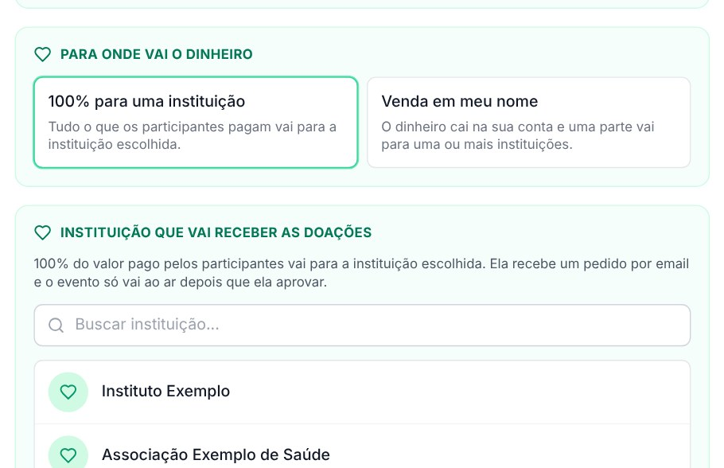
| Forma | Como funciona |
|---|---|
| 100% para uma instituição | Tudo o que os participantes pagam vai para a instituição escolhida, cobrado na conta dela. Ela recebe um pedido por e-mail, e o evento só vai ao ar depois que ela aprovar. Aqui você escolhe também quem paga a tarifa da Stripe (a instituição, o comprador ou o comprador escolhe). |
| Venda em meu nome | A venda é sua e o dinheiro cai na sua conta Stripe; uma parte vai para uma ou mais instituições (a contribuição social). Veja a próxima página. |
Times, data limite das inscrições, mensagens e o visual do e-mail do ingresso (uma capa sua e o Du, o mascote da DuGood) você ajusta depois, na página do evento.

O evento é seu, com contribuição social
Na venda em seu nome, você é o vendedor: o pagamento cai na sua conta Stripe e o comprovante sai no seu nome. De cada venda, a parte das instituições e a doação extra dos compradores são separadas e repassadas a elas pela DuGood.
Como montar a divisão
- Escolha as instituições.Uma ou mais, cada uma com o percentual do valor bruto dos ingressos e produtos. Se quiser, a contribuição vale só para alguns ingressos ou produtos.
- Escolha quem recebe a doação extra.Quem compra pode doar um valor a mais, que vai 100% para a instituição que você marcar.
- Escolha a taxa de pagamento.Eu absorvo a taxa (a tarifa da Stripe sai da sua parte) ou O comprador paga a taxa (somada ao valor pago). A parte das instituições não muda.
- Envie para as instituições.Cada uma recebe um pedido por e-mail para captar no nome dela, vendo a divisão. O evento vai ao ar quando todas aprovarem.
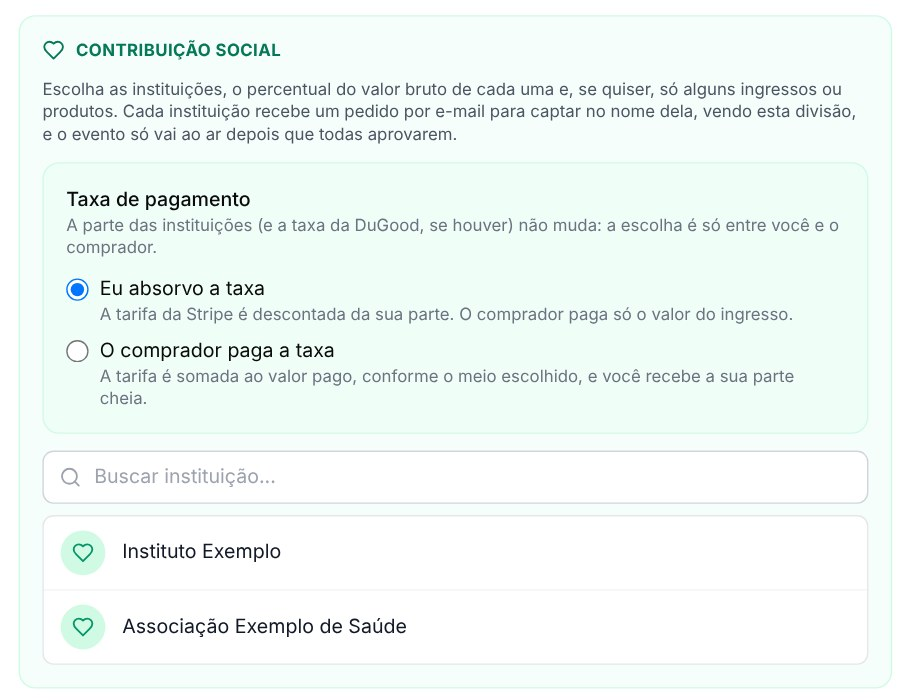
O formulário mostra, para cada ingresso e produto, a parte de cada instituição, a tarifa, o total descontado e quanto você recebe. O painel não aceita uma divisão em que as instituições e a tarifa passem do preço do ingresso.
| Situação | O que fazer |
|---|---|
| Aguardando ONG | As instituições ainda estão analisando. Nada a fazer. |
| Recusado pela ONG | Ajuste a divisão ou troque a instituição e envie de novo. |
| No ar | Todas aprovaram: o evento está recebendo inscrições. |
Você nunca repassa nada à mão. Nos eventos com contribuição social, todo pagamento passa pelo app e a DuGood repassa a parte de cada instituição. Por isso, a inscrição feita à mão nesses eventos é sempre cortesia, sem valor.
Tudo do evento num lugar só
Clique no evento em Eventos › Meus eventos para abrir a página dele. É ali que você acompanha as inscrições e muda o que precisar, sem voltar ao formulário.
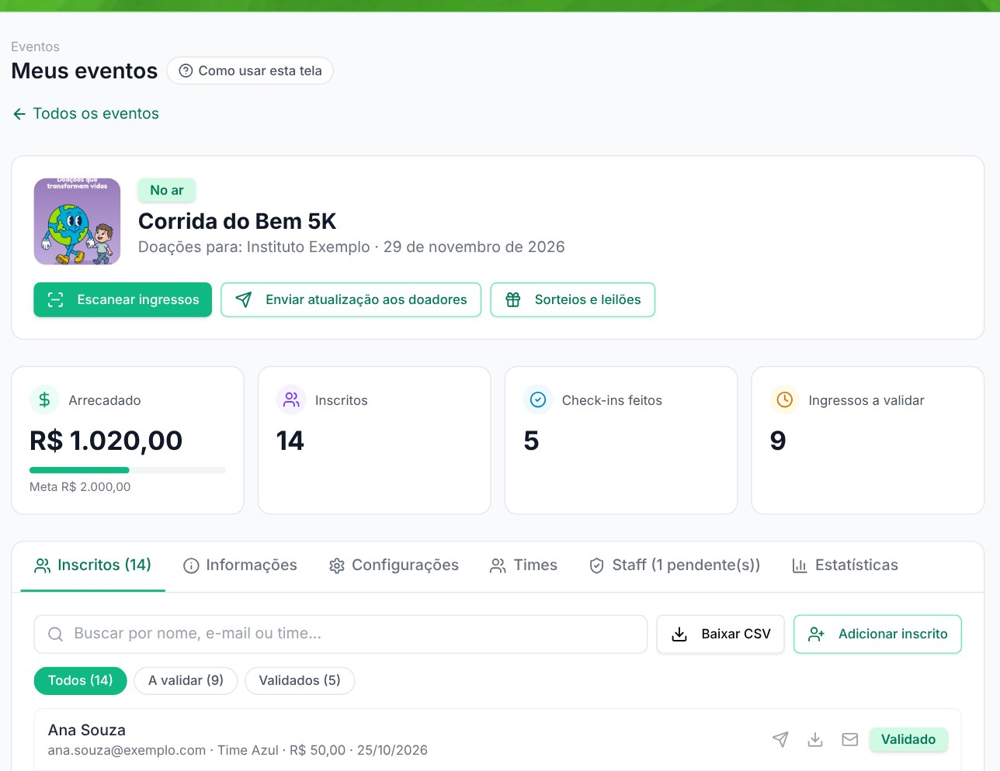
| Aba | Para que serve |
|---|---|
| Inscritos | A lista de quem se inscreveu, com busca, Baixar CSV, Adicionar inscrito, marcar chegada, reenviar o ingresso, mandar mensagem e cancelar ingresso. |
| Informações | Nome e descrição, data e local, fotos e divulgação. Cada bloco tem um botão Alterar. |
| Configurações | Gestão (copiar link, suspender, encerrar inscrições, encerrar evento), ingressos, prazo e dados da inscrição, taxa, ingresso e e-mail. |
| Times e Staff | Os times do evento e o link de staff para a portaria (página 06). |
| Estatísticas | Os números das inscrições. |
- No topo: Escanear ingressos, Enviar atualização aos doadores (e-mail e notificação para os inscritos) e Sorteios e leilões.
- Qualquer pessoa pode se inscrever sem ter conta: informa o e-mail e os dados pedidos, e os ingressos vão para esse e-mail.
- Cancelar ingresso tira o ingresso da portaria, do estoque e das vendas. O valor é acertado por fora com a pessoa; o app não faz reembolso.
A entrada, ingresso por ingresso
Cada inscrição gera um ingresso com QR code, que chega por e-mail para quem se inscreveu. Na entrada, a equipe lê o QR code e confirma a presença. Assim você sabe quem chegou, e o mesmo ingresso não entra duas vezes.
Passo a passo
- Abra o scanner no celular.Clique em Iniciar Scanner e permita o uso da câmera.
- Aponte para o QR code do ingresso.Aparecem o participante, o evento, o valor e o time.
- Confira e clique em Confirmar Validação.A chegada fica registrada e o ingresso não vale de novo.
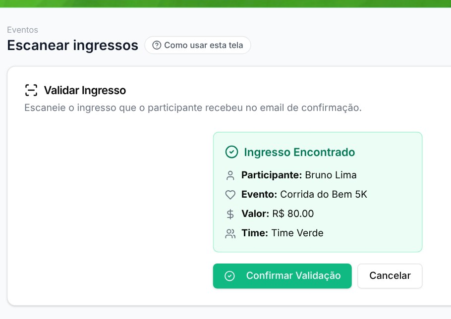
- Sem QR code? Procure o nome na aba Inscritos e use Marcar chegada.
- Ingresso cancelado não vale na portaria.
- Os números de check-ins e ingressos a validar aparecem na Visão geral e na página do evento.
Teste antes. Abra o scanner no celular de cada pessoa da portaria um dia antes, para a câmera já estar liberada no dia do evento.
Extrato, repasses e relatórios
O menu Financeiro mostra o que entrou na sua conta Stripe, o que foi para as instituições e o resultado de cada evento no mês. Ele aparece com a conta Stripe pronta.
Extrato
Em Financeiro › Extrato: as vendas, a parte das ONGs e as tarifas, o valor líquido recebido e os repasses para o banco, com filtros e exportação em CSV. O saldo disponível, o que está a liberar e o próximo repasse ficam no topo. Com a frequência sob demanda, use Repassar agora.
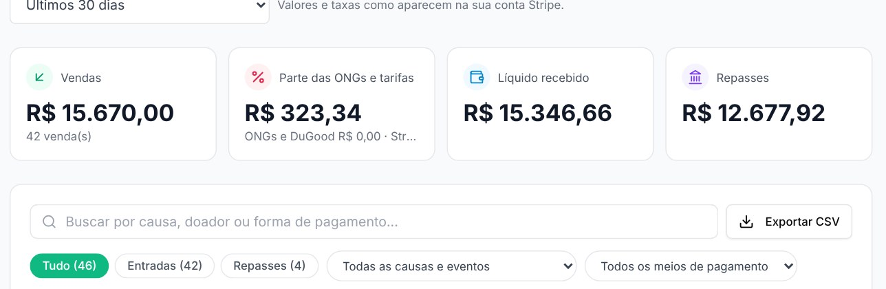
Repasses às instituições
No fim do Extrato, a lista de quanto cada instituição recebeu das vendas de cada evento. A DuGood faz esses repasses: você não precisa transferir nada.
Relatórios mensais
Em Financeiro › Relatórios mensais: o que cada evento seu vendeu no mês (ingressos e produtos por tipo, doação extra, cancelados, a parte das instituições e a sua parte), em PDF ou planilha, no idioma que você escolher.
Ingressos cancelados ficam fora das contas do relatório e saem da parte das instituições. O valor já pago é acertado por fora.
Perguntas que sempre aparecem
Quanto a DuGood cobra?
Hoje, nada: a DuGood não cobra taxa de administração, e as ferramentas do painel são grátis. A Stripe cobra as tarifas dela por pagamento, e em cada evento você escolhe se absorve ou se o comprador paga.
Preciso de conta Stripe?
Só para vender em seu nome. Nos eventos 100% para uma instituição, o pagamento é cobrado na conta da instituição.
Por que o meu evento ainda não está no ar?
Toda instituição do evento precisa aprovar. Enquanto isso, ele fica "Aguardando ONG". Se uma recusar, ajuste o evento ou escolha outra instituição.
Alguém da equipe entrou, mas o painel não abre.
O pedido de acesso precisa ser aprovado pelo administrador em Configurações › Controle de acessos. Para quem trabalha só na portaria, use o link de staff do evento.
Como cancelo um ingresso?
Na aba Inscritos do evento, use Cancelar ingresso. O ingresso deixa de valer na entrada e sai das vendas; o valor é acertado por fora com a pessoa.
Posso inscrever alguém à mão?
Sim, com Adicionar inscrito, pedindo os mesmos dados. Nos eventos com contribuição social, a inscrição à mão é sempre cortesia: para cobrar, a pessoa compra pelo app.
O administrador saiu da organização.
Se ele ainda consegue entrar, use Passar administração para outra pessoa da equipe. Se não consegue, fale com a DuGood.
Quando o dinheiro cai na conta bancária?
Conforme a frequência de repasses escolhida em Financeiro › Pagamentos, assim que a Stripe libera o saldo (cartão leva mais dias que o Pix).
Conte com a gente
Ficou alguma dúvida? Fale com a DuGood: comercial@dugood.com.br · WhatsApp (11) 99429-9400